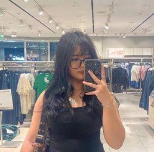

Ciogar Magno
“We honestly started Beans & Beads because we wanted a way to bring our neighborhood closer together through things that actually matter: looking after the environment and taking care of each other.”
Beans & Beads is a grassroots creative and urban agriculture initiative based in Las Piñas City. We believe that sustainable living starts with small, tangible everyday actions—growing what we eat and repurposing what we discard.
Through our Seed Library and community garden plots, we promote local food resilience, empower families to start backyard farming, and preserve native crop varieties. Alongside our green efforts, our creative upcycling workshops transform discarded single-use plastics and scrap materials into handcrafted beaded jewelry and accessories, creating accessible livelihood training and eco-advocacy for local youth.
“We honestly started Beans & Beads because we wanted a way to bring our neighborhood closer together through things that actually matter: looking after the environment and taking care of each other.”

“Beans & Beads came from wanting to mix green living with the arts. It’s super rewarding to see students and residents collaborate, cut down waste, and share great stories.”
“I wanted community service to feel way more personal and creative. Whether we're planting seeds or upcycling with local seniors, it’s just about teaming up and making a real difference together.”
Las Pinas City
Botanical Garden